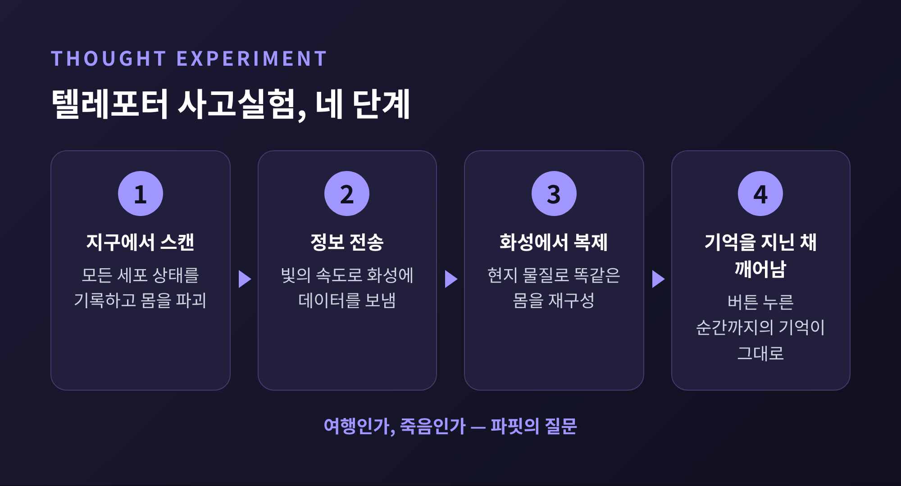
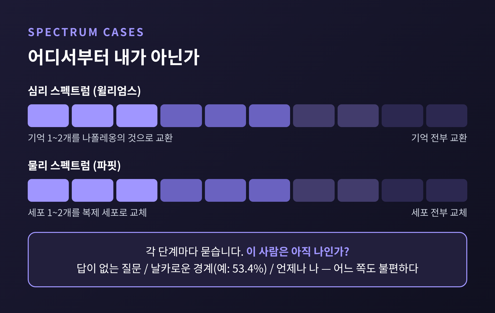
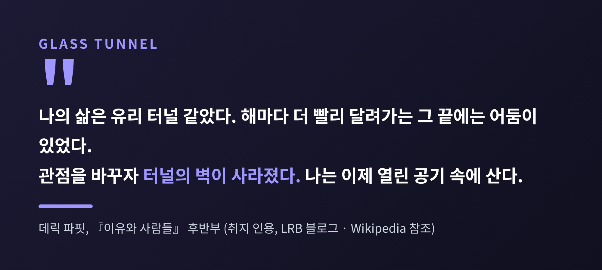

오늘은 영국 철학자 데릭 파핏이 제시한 인격 동일성 이론을 정리해 보려 합니다.
중심에는 텔레포터 사고실험이 있습니다. 몸이 파괴된 뒤 화성에서 다시 만들어진 사람이 과연 '나'인가를 묻는 이야기입니다.
이 질문이 왜 '나는 누구인가'라는 오래된 물음을 통째로 흔드는지, 그리고 파핏이 어떤 결론에 이르렀는지 차근차근 따라가 보겠습니다.
데릭 파핏은 1942년 12월 11일 중국 청두에서 태어났습니다.
학자로서의 삶은 거의 옥스퍼드에서 보냈고, 세상을 떠날 때에는 올소울스 칼리지의 명예 선임 연구원이었습니다.
2017년 1월 초에 향년 74세로 별세했습니다. 사망일은 자료에 따라 1일과 2일로 갈리기 때문에 '1월 초'로만 적어 둡니다.
그의 이름을 철학사에 남긴 책은 1984년 옥스퍼드대학출판부에서 나온 『이유와 사람들(Reasons and Persons)』입니다.
약 560쪽에 이르는 이 책의 3부가 바로 인격 동일성을 다룹니다.
버나드 윌리엄스가 "brilliantly clever and imaginative"이라 평했고, 피터 싱어는 가장 흥미진진한 책 가운데 하나로 꼽았습니다.
책이 나온 지 40년이 넘은 2026년 현재에도, 인격 동일성을 이야기할 때 가장 먼저 호출되는 텍스트입니다.
실험은 이렇게 시작됩니다.
지구의 한 기계에 들어가 버튼을 누릅니다. 스캐너가 몸의 모든 세포 상태를 기록하면서 몸을 파괴합니다.
그 정보가 빛의 속도로 화성에 전송되고, 화성의 기계가 현지 물질로 똑같은 사람을 만들어 냅니다.
기계는 완벽하게 믿을 만하다고 가정합니다.
화성에서 깨어난 사람은 버튼을 누른 순간까지의 기억을 모두 지니고 있습니다.
입술에 난 면도 상처까지 그대로입니다.
본인은 분명히 '나'라고 느낄 것입니다.
그런데 지구에 있던 몸은 사라졌습니다.
어떤 이는 이것을 아주 빠른 여행이라고 합니다. 어떤 이는 "여행이 아니라 죽는 방법"일 뿐이라고 합니다.
파핏은 이 갈림길 위에서 우리의 직관이 얼마나 불안정한지를 보여 줍니다.
참고로 이 발상이 파핏만의 것은 아닙니다.
스타니스와프 렘이 1950~60년대 저작에서 비슷한 문제를 다뤘고, 대니얼 데닛도 1981년 『마인즈 아이』 서문에서 화성 시나리오를 소개했습니다.
다만 이 장치를 동일성 이론의 한복판으로 끌고 들어간 것은 파핏이었습니다.

파핏은 실험을 한 단계 비틀어 '분기선(Branch-Line) 사례'를 만듭니다.
이번에는 스캐너가 몸을 파괴하지 않습니다. 정보만 보내고, 화성에 복제본이 생깁니다.
대신 스캐너의 부작용으로 지구의 나는 말기 암을 얻어 며칠 안에 죽는다고 설정합니다.
여기서 질문이 생깁니다.
지구의 나와 화성의 복제본이 동시에 존재하는 동안, 둘 중 누가 '나'입니까.
기억도 성격도 같은 두 사람이 있다면 둘 다 나일 수는 없습니다. 둘은 서로 다른 사람이기 때문입니다.
분열(fission) 사례는 이 곤란함을 더 날카롭게 만듭니다.
대뇌 반구 하나씩을 서로 다른 두 몸에 이식한다고 해 보겠습니다. 두 사람 모두 원래의 나와 심리적으로 이어져 있습니다.
하지만 하나가 둘과 동일할 수는 없습니다.
선택지는 몇 개 안 됩니다.
둘 다 나라고 하면 논리가 깨집니다. 둘 중 하나만 나라고 하면 근거가 없습니다. 둘 다 내가 아니라고 하면 나는 죽은 셈이 됩니다.
파핏은 여기서 질문 자체를 바꿉니다. 동일성이 정말 중요한 것인가를 묻는 것입니다.
파핏의 답은 환원주의입니다.
사람의 존재는 뇌와 몸, 그리고 서로 이어진 정신적·물리적 사건들 외에 아무것도 아니라는 입장입니다.
서로 다른 시점의 두 사람을 '같은 사람'으로 묶어 주는 추가적 사실(further fact)은 없다고 봅니다.
그렇다면 무엇이 중요할까요. 파핏은 이를 '관계 R'이라 부릅니다.
R은 두 가지로 이루어집니다. 하나는 심리적 연결성으로, 기억·성격·의도가 직접 인과적으로 이어진 정도입니다. 다른 하나는 심리적 연속성으로, 그런 연결이 겹겹이 중첩된 사슬입니다.
핵심은 대비에 있습니다.
동일성은 전부 아니면 전무입니다. 같거나, 다르거나 둘 중 하나입니다.
R은 정도의 문제입니다. 어제의 나와는 강하게, 20년 전의 나와는 약하게 이어져 있습니다.
또 R은 일대다로 갈라질 수 있지만, 동일성은 그럴 수 없습니다.
그래서 텔레포터의 화성 복제본은 이렇게 설명됩니다.
엄밀한 의미에서 '나와 동일한 사람'인지는 답이 없는 질문일 수 있습니다. 그러나 나와 R로 이어져 있다는 사실은 분명합니다.
파핏에게는 그것이 생존에서 중요한 전부입니다. 분열 사례에서도 두 명의 후계자가 생기는 편이, 동일성을 고집하다 죽는 것보다 나쁘지 않다고 봅니다.
이 입장은 흄의 '지각의 다발' 이론이나 불교의 오온(五蘊) 사상과 닮았습니다.
다만 파핏은 자아가 없다는 데서 멈추지 않고, 무엇이 중요한지의 기준을 동일성에서 심리적 연결로 옮겨 놓았다는 점에서 한 걸음 더 나아갑니다.
파핏은 경계선을 찾으려는 시도가 왜 실패하는지도 보여 줍니다.
윌리엄스가 쓴 '심리 스펙트럼'은 내 기억 한두 개를 나폴레옹의 기억으로 바꾸는 데서 시작해 전부 바꾸는 데까지 이어집니다.
파핏은 이에 대응해 '물리 스펙트럼'을 만듭니다. 세포 한두 개를 똑같은 복제 세포로 바꾸는 데서 시작해 전부 바꾸는 데까지 이어집니다.
각 단계에서 질문은 같습니다. 이 사람은 아직 나인가.
선택지는 세 가지입니다. 답이 없는 질문이라고 하거나, 어딘가에 날카로운 경계가 있다고 하거나(예를 들어 53.4퍼센트처럼), 언제나 나라고 하는 것입니다.
어느 쪽도 개운하지 않다는 것이 요점입니다.
사실 우리 몸은 이미 세포가 계속 교체되는 중입니다. 테세우스의 배 문제와 같은 구조입니다.
물리적 연속성만으로 '나'를 붙들기 어렵다는 것은 텔레포터 이전부터 알려진 사실이었습니다.
텔레포터는 그 사실을 극단까지 밀어붙여 눈에 보이게 만든 장치인 셈입니다.

이 이론은 추상적인 논증으로 끝나지 않습니다. 파핏 자신의 삶에도 영향을 주었습니다.
그는 한때 자기 삶이 유리 터널 같았다고 적었습니다. 해가 갈수록 더 빨리 그 안을 달려가고, 끝에는 어둠이 있었다고 합니다.
그러다 생각을 바꾸자 터널의 벽이 사라졌고, 이제는 열린 공기 속에 산다고 썼습니다.
자신의 존재가 특별한 '추가적 사실'이라는 믿음을 내려놓자, 남은 삶에는 덜 마음을 쓰고 타인의 삶에는 더 마음을 쓰게 되었다고 합니다.
죽음에 관해서도 비슷한 서술을 남겼습니다. 환원적으로 풀어 쓰면 "내 죽음은 사라지는 것 같다"는 것입니다.
미래의 죽음이란 이후의 경험이 지금의 뇌와 인과적으로 이어지지 않는다는 사실로 환원되기 때문입니다.
윤리적 함의도 있습니다.
R이 정도의 문제라면 아주 먼 미래의 나에게는 덜 신경 써도 되는 걸까요.
파핏은 그렇지 않다고 봅니다. 미래의 자신을 지나치게 할인하는 것은 타인에게 해를 끼치는 것과 마찬가지로 부도덕하다는 것입니다. 흡연을 미래 자아의 건강을 해치는 일로 읽는 확장도 이런 맥락에서 나옵니다. 다만 파핏이 강한 사회적 통제를 지지한 것은 아닙니다.

모든 철학자가 파핏에게 동의하는 것은 아닙니다. 한계도 분명히 짚어 두겠습니다.
우선 도덕적 귀결에 대한 비판이 있습니다.
Palmer는 형이상학은 받아들이더라도 결론은 위험하다고 봅니다. R이 약해질수록 약속의 구속력도 약해진다면, 약속은 실천적 힘을 잃습니다. 성공한 화가가 R이 옅어졌다는 이유로 과거 후원자에게 진 빚을 거부해도 되느냐는 반문이 대표적입니다. 텔레포터 사례에서는 누구에게 약속을 지켜야 하는지조차 모호해집니다.
다음으로 우리가 무엇인가를 둘러싼 논쟁이 있습니다.
IEP에 따르면 동물주의와 신체 기준을 옹호하는 쪽은 태아나 식물인간 사례를 들어 반박합니다. 심리적 연속성이 없어도 우리는 존재하는 것처럼 보인다는 것입니다.
에릭 올슨은 2015년 논문에서, 우리를 인간 동물이 아니라 그 안의 '생각하는 부분'(대체로 뇌)으로 보는 파핏의 후기 입장이 자체 모순과 존재론적 부담을 안고 있다고 비판했습니다.
스탠퍼드 철학 사전은 동일성이 실천적으로 중요하다고 옹호하는 학자들(소사, 메릭스)의 입장도 함께 소개합니다.
또 하나, 분열처럼 물리적으로 불가능한 사례가 이론의 근거가 될 수 있느냐는 의문도 있습니다.
파핏 이론은 아직도 결론이 난 문제가 아닙니다.
정리하면 이렇습니다.
텔레포터는 기술의 이야기가 아니라, 우리가 '나'라고 부르는 것이 몸인지 기억인지 아니면 아무것도 아닌지를 묻는 장치입니다.
파핏의 답은 "동일성은 중요하지 않고, 이어짐이 중요하다"로 압축됩니다.
물론 이 답이 마음 편한 것만은 아닙니다. 어제의 나와 오늘의 나가 이어져 있다는 감각이 사실은 정도의 문제라는 말은, 꽤 오래 곱씹게 됩니다.
그래도 저는 이 사고실험이 주는 선물이 하나 있다고 생각합니다. 내 안에 갇혀 있다는 느낌이 옅어지고, 타인과 미래 세대를 향한 시선이 열린다는 점입니다.
화성에서 깨어날 사람을 정말 '나'라고 부를 수 있느냐고 물으신다면, 저는 이렇게 답하겠습니다.
이름을 붙이는 일보다 그 사람과 무엇이 이어져 있는지를 살피는 일이 더 중요하다고 말입니다.